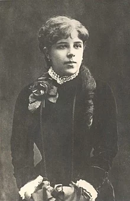

Татьяна Львовна Давыдова
Татьяна Львовна Давыдова (6 сентября 1861 в поместье Каменка, Чигиринский уезд, Киевская губерния, Российская империя — 19 января 1887 или 20 января 1887, Санкт-Петербург, Российская империя) — племянница русского композитора Петра Ильича Чайковского. Старшая сестра Владимира и Юрия Давыдовых. Биограф Чайковского Валерий Соколов выделял в жизни Татьяны Давыдовой два этапа — благополучный (до 1879 года) и «драматический» (1879—1887 годы).
Татьяна была старшей дочерью сестры композитора Александры и её мужа Льва Давыдова. Чайковский был близок со своей племянницей, посвятил ей «Шесть вокальных дуэтов», а когда в 1883 году она забеременела от пианиста Станислава Блуменфельда, композитор и его брат Модест увезли Татьяну в Париж и организовали ей роды. После того, как она родила мальчика, композитор сам зарегистрировал рождение ребёнка, организовал его крещение и оказал финансовую поддержку. Чайковский участвовал в его усыновлении своим старшим братом Николаем. Валерий Соколов писал: «Племяннице было суждено стать одной из глубоких душевных ран и даже „язв“ Петра Ильича, рубцы от которых сохранились очень надолго». Татьяна Давыдова скончалась, предположительно, от передозировки морфина в Санкт-Петербурге в возрасте 25 лет. Она была похоронена на кладбище Александро-Невской лавры, но место её захоронения не сохранилось.
Биография
В 2021 году российский композитор и историк музыки Валерий Соколов посвятил Татьяне Давыдовой большую (110 страниц) статью «Татьяна Давыдова в жизни П. И. Чайковского» в сборнике научных публикаций «Петербургский музыкальный архив», который вышел под патронатом «Тchaikovsky Society». В ней он реконструировал биографию девушки и попытался определить роль её проблем в жизни и творчестве композитора.
Детсво и юность
Татьяна Львовна Давыдова (в письмах и дневниках Чайковский называл её «Таней», «Танюшей», «Танюркой», «Танькой») родилась 6 сентября 1861 в поместье Каменка в Чигиринском уезде Киевской губернии, в котором постоянно проживали её родители Александра Ильинична (сестра Чайковского) и Лев Васильевич Давыдовы. Пётр Ильич откликнулся на это событие стихотворением собственного сочинения, в котором, в частности, была строка: «Возрадуйся, великая Татьяна! Ликуй, вся Русь».
В раннем детстве Татьяна демонстрировала незаурядные способности. Уже к четырём годам она выучилась читать, свободно разговаривала на французском языке. В это же время девочка под руководством матери приступила к занятиям на фортепиано и уже исполняла в четыре руки с Александрой Давыдовой «Красный сарафан» Александра Варламова, «Чижик-пыжик» и «первую гамму» (по предположению Соколова, имеется в виду гамма в тональности до мажор). До некоторого времени Александра Давыдова отмечала большие успехи дочери в освоении инструмента, но в 1868 году новая гувернантка, имевшая музыкальное образование, раскритиковала музыкальные навыки девочки и заставила её вернуться к гаммам и заняться музыкальной теорией.
Взрослая жизнь
Американский биограф Чайковского Александр Познанский писал, что ещё до рождения Татьяны её родители мечтали о «сказочном будущем» для дочери. Она всегда была любимицей семьи. Под влиянием всеобщего обожания Татьяна и сама поверила в собственную исключительность.
С зимы 1878/1879 годов Давыдовы воспринимали дочь как взрослую барышню — в Санкт-Петербурге она посещала театры, балы, пикники, кокетничала, привлекла к себе внимание светского общества. Планировалось её участие «в придворном балу» и представление девушки императору Александру II. Вернувшись в Каменку, Татьяна пыталась продолжать вести светскую жизнь. В 1879 году во время поездки в Ялту Татьяна привлекла пристальное внимание сразу двух мужчин — князя Алексея Церетелева (Церетели) и 35-летнего орловского помещика Кошкарова, который даже сделал ей предложение. Чайковский был возмущён последним фактом, писал, что Кошкаров стар и уродлив, «но очень умный и сумевший заинтересовать Таню своей оригинальностью и самобытностью». Новым молодым человеком Татьяны стал князь Трубецкой, которому исполнилось 24 года, офицер, награждённый Георгиевским крестом, «чрезвычайно симпатичный, добрый и милый». Он также сделал ей «формальное предложение». Племянница композитора дала согласие, но при условии одобрения брака родителями жениха. Они, когда-то проживавшие с детьми в Веве в одно время с Давыдовыми, положительно высказывались о браке, но не могли обеспечить сына материально, а предпринимаемые ими по этой причине попытки определить его на гражданскую службу откладывали брак на неопределенный срок.
Последние годы
Предполагаемое родственниками выздоровление дочери позволило Александре Чайковской в 1886 году сделать Татьяну попечительницей её младших братьев Дмитрия и Владимира, учившихся и проживавших в то время в Санкт-Петербурге. Валерий Соколов считал, что с конца 1884 до 1887 года она во многом изменилась. Татьяна Давыдова стала более спокойной, к ней возвращалось здоровье, много времени у неё отнимали домашнее хозяйство и воспитание братьев. Вместе с тем он допускал, что «близкие просто „махнули рукой“ на возможность её полного восстановления, перестали драматизировать её проблемы и смирились с возможностью её гибели».
Татьяна Давыдова скончалась, по разным свидетельствам, 19 или 20 января 1887 в Санкт-Петербурге. Во время столичного бала-маскарада она неожиданно упала и вскоре скончалась от сердечного приступа. Валерий Соколов считал более правильной датировку смерти Давыдовой 20 января, отмечая, что маскарад проходил глубокой ночью. Газета «Новое время» посвятила смерти 25-летней девушки целую заметку:
«Сегодня, в час пополуночи, в самый разгар блестящего маскарада в Дворянском собрании, случилось трагическое событие: молодая двадцатидвухлетняя девушка, г-жа Татьяна Давыдова, скоропостижно скончалась от паралича сердца. Её едва успели вынести из залы в уборную: лицо её тотчас же помертвело, глаза ввалились, нижняя губа отвисла. Потребованное генералом Грессером шампанское лишь на несколько минут оживило умиравшую. Приехала она в маскарад в обществе компаньонки. Ближайшей непосредственной причиной паралича был, по удостоверению врача, туго стянутый корсет; кроме того, было удостоверено, что больная страдала морфиноманией… присутствовал министр иностранных дел Н. К. Гирс, французский посол де-Лабулэ, испанский посланник Кампо-Саградо, весь персонал германского, французского и японского посольств и почти вся петербургская придворная и чиновная знать.»
Некоторую информацию о Елизавете Молас сообщает в своих мемуарах Галина фон Мекк: по своему происхождению компаньонка была наполовину испанкой, а наполовину немкой. Молас родилась в семье морских офицеров и была хорошо знакома с Чайковскими. Именно братья Чайковские рекомендовали её Давыдовым. Молас оставалась с Татьяной Давыдовой до самой её смерти.
Чайковский и Татьяна Давыдова
Соколов отмечал, что Татьяна, а также её брат Владимир, с раннего детства были в центре внимания Чайковского. Впоследствии Владимир стал настоящим «кумиром» и «идолом» композитора. Напротив, Татьяну Чайковский со временем всё чаще подвергал резкой критике. Пётр Ильич был непосредственным свидетелем формирования личности девочки, а в детские годы принимал участие в её воспитании, позже он пытался принять участие в решении её «взрослых» проблем. Татьяна долгое время была одним из самых часто упоминаемых «персонажей» в его переписке.
Отношение композитора к Татьяне Давыдовой было противоречивым. Периоды отдаления чередовались со временным сближением. В письме к младшему брату он писал в 1879 году: «у неё чудное сердце и все её недостатки, её неровность, её аффектированность ею самою чувствуются и ненавидятся, но только она решительно не понимает, что нужно сделать, чтобы не быть такой». Чайковский отмечал, что девушка ощущает себя несчастной. Он следил за изменением её внешности («Детки после кори поправились, хотя еще худы и бледны. Таня бритая, но очень похорошела») и успехами в овладении иностранными языками и фортепиано, восхищался её игрой на любительской сцене. Чайковский утверждал: «одарённая большими способностями, чудным сердцем и замечательной красотой, страдает одним довольно несносным недостатком — она вечно и всегда скучает. Натура её какая-то надломленная, полная мучительных сомнений и недоверия к себе, беспокойная, проникнутая преждевременной разочарованностью».
Американский музыковед Роланд Джон Уайли на основе анализа текста стихотворений, положенных в основу дуэтов, сделал следующие выводы:
- Сочиняя цикл, Чайковский намекал на трудности в судьбе самой Татьяны Давыдовой: ночь приносит облегчение от дневных забот (№ 1), безутешная печаль (№ 3), девушка страдает от надменности юноши (№ 4), любовь прошла, но возвращение в безмятежное прошлое уже невозможно (№ 5), восхищение природой и молитва (№ 6). Единственный дуэт, не вписывающийся в общую схему, с точки зрения Уайли, — № 2 (кровь отца на руках сына). Уайли также отмечал, что сам композитор указывал: именно этот дуэт нужно не столько петь, сколько декламировать.
- В цикле отчётливо прослеживается последовательность времён суток, которым посвящены дуэты, — от «Вечера» (№ 1) к «Рассвету» (№ 6).
Георгий Николаевич Чайковский
Во Франции Георгий в детстве находился на попечении семьи Оклер в местечке Вильнёв к югу от Парижа. Там он пробыл первые три года своей жизни. Чайковский навещал его, когда приезжал в Париж, и с недовольством подмечал сходство мальчика с предполагаемым отцом — Блуменфельдом, хотя и испытывал к ребёнку симпатию. Позднее Чайковский принимал активное участие в его судьбе. В частности, в своём завещании композитор обеспечил материальное благополучие мальчика.
«Пётр Чайковский. Завещание, составленное 30 сентября 1891 года. Фрагменты, относящиеся к Георгию Чайковскому (с сохранением орфографии и пунктуации оригинала).».
Лидия Конисская утверждала, что Давыдовы-старшие долгое время не знали о существовании у них внука. Тайна раскрылась случайно. Лев Давыдов заявил Николаю Чайковскому: «Ой, как я не люблю этого твоего французика!», присутствовавший младший брат композитора генерал-майор по Адмиралтейству Ипполит Чайковский неосторожно сказал: «Как же ты можешь его не любить, это же твой внук!». К этому времени Татьяна уже давно была мертва. Сам Ипполит также далеко не сразу узнал о тайне усыновления мальчика. Пётр Ильич отмечал в одном из своих писем: «Ипполит гостил У Ник[олая] Ильича и несколько раз с удивлением замечал, что Ж[орж] похож на Таню, а впрочем, ничего не подозревает». В свою очередь, Джон Роланд Уайли писал, что благодаря хвастовству Блуменфельда своей победой на любовном поприще о беременности Татьяны Давыдовой знали во всём Киеве и Александра активно расспрашивала брата о Блуменфельде, хотя до этого он никогда её не интересовал.
Историография
Среди мемуаристов наиболее подробно рассказывают о судьбе Татьяны Давыдовой её близкие родственники — младший брат Юрий Давыдов в книге «Записки о П. И. Чайковском», вышедшей в 1962 году, и её племянница Галина фон Мекк в книге «Как я их помню» (1973). Юрий Давыдов, в частности деликатно обходит проблему злоупотребления Татьяной морфином. Проблемы девушки со здоровьем он объясняет тем, что «от слишком быстрого умственного и физического развития у неё начались сильные головные боли, мучившие её всю жизнь». Мемуарист избегает описывать и реальные сложности отношений композитора и его племянницы. В интерпретации Давыдова, «Пётр Ильич восхищался племянницей и очень любил сестру, но не мог наладить их отношений, и сам в свою очередь раздражался и страдал». Ребёнок у Татьяны, по утверждению брата, родился в Париже от не названного по имени женатого россиянина (католика по вероисповеданию), который не мог осуществить развод с супругой в соответствии с законами Российской империи. Усыновление Георгия, по утверждению Давыдова, было осуществлено Николаем Чайковским «по настоятельной просьбе» композитора. Смерть сестры Юрий объясняет разрывом сердца.
Лишь трижды вспоминает о судьбе Татьяны Давыдовой Модест Чайковский в трёхтомнике «Жизнь Петра Ильича Чайковского (по документам, хранившимся в архиве в Клину)». Два раза — в связи с её смертью. Модест Чайковский описывает, как был разбужен в Москве телеграммой о кончине Татьяны в столице. Он не стал будить сразу старшего брата, который встал только «в 11-м часу довольный, счастливый и бодрый». Композитор был в горе от неожиданного известия, но «не изменил решения ещё два раза продирижировать „Черевичками“». Один раз он упоминает Татьяну в связи с посвящением ей шести дуэтов, датируя их создание 5 июня — 10 июля 1880 года (Домбаев же, например, датирует их 4 июня — 24 августа того же года).
В культуре
Эпизодическую роль маленькой Татьяны Давыдовой в фильме «Любители музыки» (1971) британского режиссёра Кена Рассела сыграла его дочь Виктория.